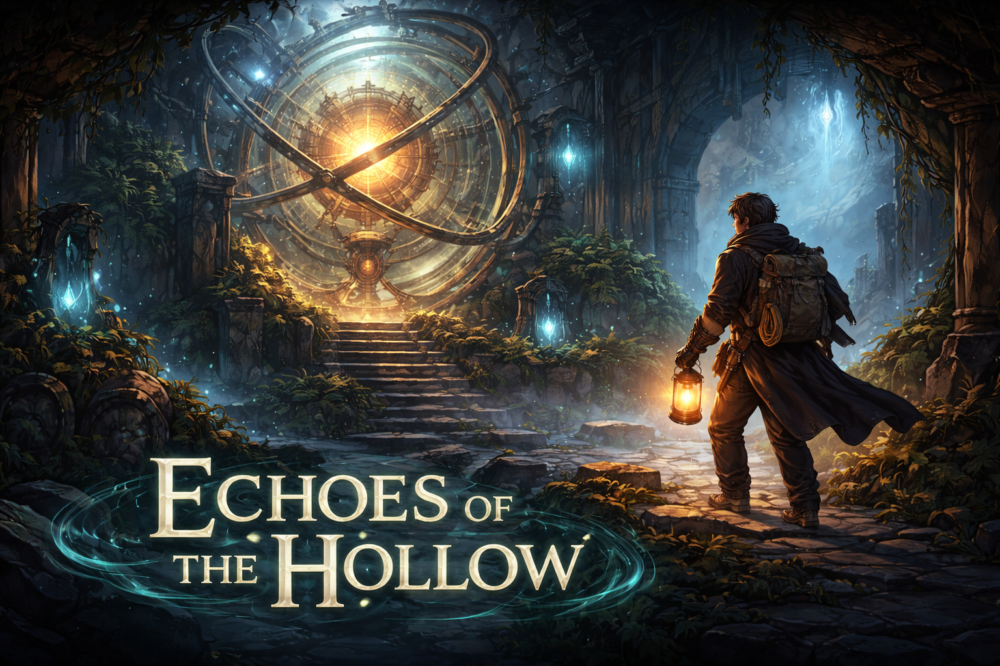
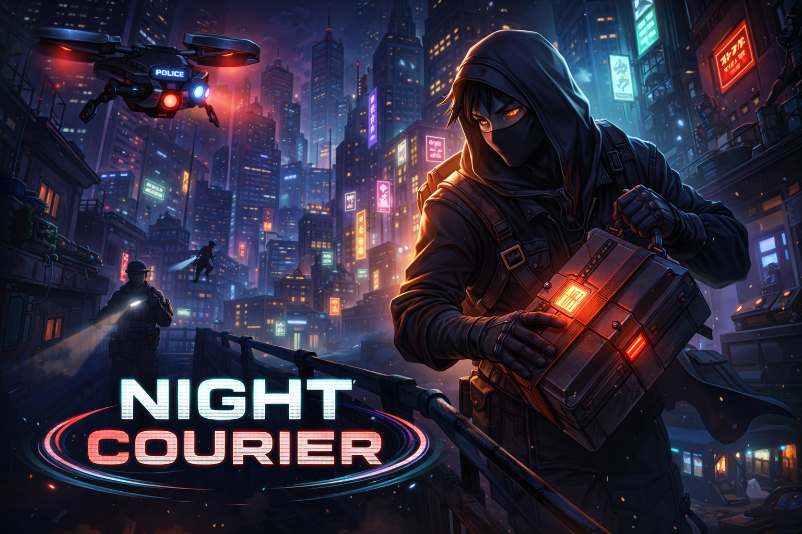
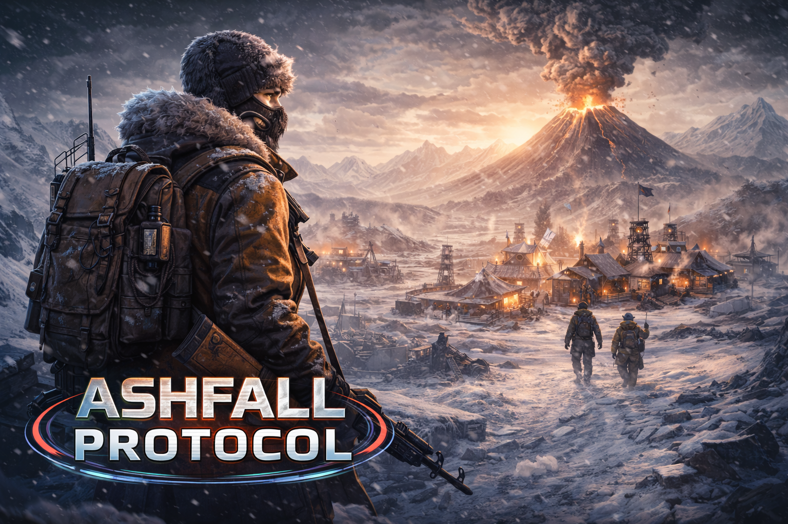
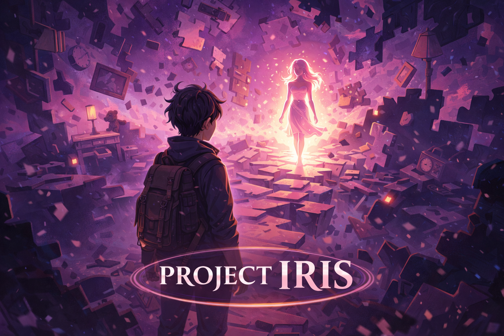
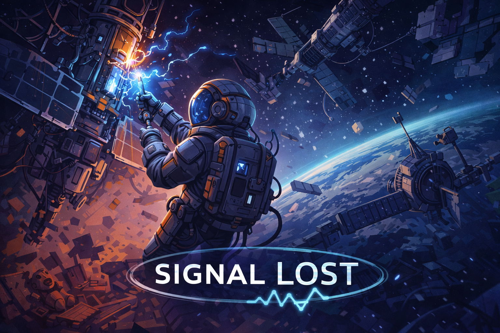
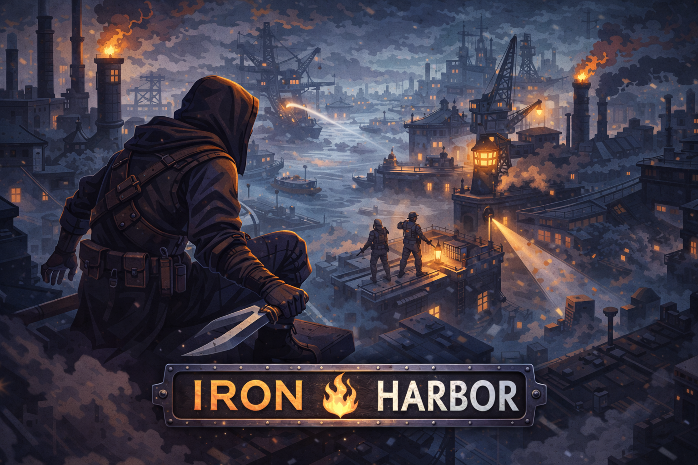

Our Games

Echoes of the Hollow
A narrative puzzle adventure set inside an abandoned observatory buried beneath the mountains. Players uncover forgotten experiments while manipulating strange celestial mechanisms.

Night Courier
A stealth delivery game set in a neon-lit cyberpunk city. Deliver forbidden packages while avoiding surveillance drones, security patrols, and rival couriers.

Ashfall Protocol
A survival strategy game set after a catastrophic volcanic winter. Manage resources, rebuild infrastructure, and lead survivors through a harsh frozen world.

Project Iris
A psychological exploration game where players navigate fragmented memories to uncover the truth behind a mysterious disappearance.

Signal Lost
A sci-fi mystery set aboard a drifting orbital satellite network. Repair damaged communication relays while discovering what caused the system-wide blackout.

Iron Harbor
A tactical stealth game set in a fog-covered industrial port city controlled by rival factions. Plan infiltration routes, sabotage operations, and escape unseen.